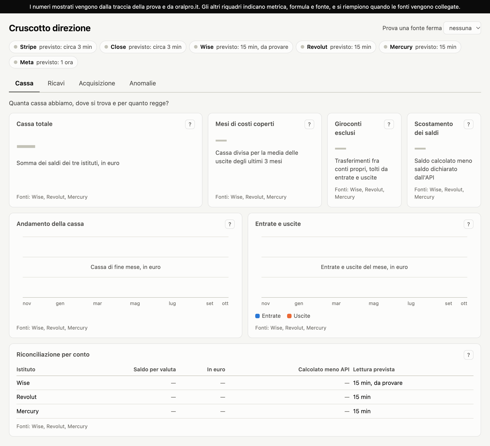

Dashboard di management
Davide Campo · materiali della prova per AI & Automation Specialist

Dashboard cliccabile
Quattro viste, con formula e SQL per ogni riquadro. Contiene solo i numeri della traccia e di oralpro.it; il menu in alto mostra cosa succede quando una fonte si ferma.
Apri la dashboard
Lavagna
Il ragionamento di partenza: cosa dicono i numeri, i due funnel e perché cambiano il CAC.
Apri la lavagna
Schemi di progetto
Architettura, modello dati, percorso del denaro, gestione dei guasti, limiti di ogni fonte e piano di lavoro. PDF, 8 pagine.
Apri gli schemi